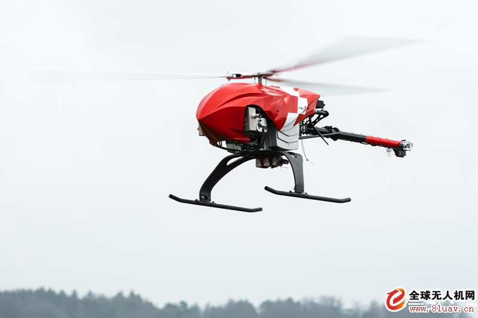

2019年4月17日报道(具体拍摄时间不详)，瑞士空中救援组织Rega已经宣布了一种无人机，它能够独自搜索和发现失踪人员。它具有一系列机载传感器，包括日光摄像头，热像仪，红外摄像头和电话跟踪工具， Rega无人机能够扫描大面积的地形，寻找在山区遇到麻烦的人。 定制的算法会对来自Rega无人机上各种摄像头的数据进行处理，并确定潜在目标，然后将任何有希望获救的目标数据转发给基地运营商。它也可以在空中救援直升机无法工作的低能见度情况下工作。
新飞机比大多数商用无人机更具优势的地方在于，它可以在数公里的距离上运行数小时，而不需要由操作员直接控制。无人机由三个直径仅超过2米(6.5英尺)的旋翼叶片组成。它设计用于在80-100米(262-328英尺)的高度飞行，它使用卫星导航技术来系统地自动覆盖预定的区域。它还配有防碰撞系统，以避免碰上电线和其他飞机。 除了配备紧急降落伞，Rega无人机不会被派往机场或人口稠密的地区。如果必须下降，对地面人员的风险也是最小的。